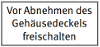
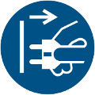
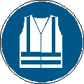
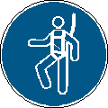
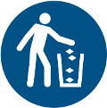
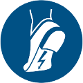

| Gebotszeichen | |||
| M021 | Vor Wartung oder Reparatur freischalten | ||
| Bedeutung | Eine Maschine oder Einrichtung, die nicht über einen Stecker mit der Hauptleitung verbunden ist, muss vor Wartung oder Reparatur von jeglicher Energiequelle freigeschaltet werden. | ||
| Gefahr | Das Zeichen zielt darauf ab, dass Beschäftigte bei der Durchführung von Wartungs- oder Reparaturarbeiten vor Gefahren durch laufende oder anlaufende Maschinen oder Einrichtungen geschützt sind. | ||
| Erwünschtes Verhalten | Maschinen oder Einrichtungen sollen vor der Durchführung von Wartungs- oder Reparaturarbeiten von der Energiezufuhr getrennt werden, wenn die mit den Arbeiten betrauten Beschäftigten ansonsten durch laufende oder unerwartet anlaufende Maschinen/Einrichtungen gefährdet werden können. | ||
| Hinweis(e) | |||
| Das Zeichen wird eingesetzt um zu verhindern, dass Beschäftigte bei Wartungs- und Reparaturarbeiten durch die Antriebsenergie einer Maschine/Anlage oder unerwartete/unerwünschte Bewegungen von Maschinen-/Anlageteilen gefährdet werden können. | |||
| Beispiele für mögliche Kombinationen | |||
 |
|||
ISO 7010-M001 Allgemeines Gebotszeichen |
ISO 7010-M007 Weitgehend lichtundurchlässigen Augenschutz benutzen |
ISO 7010-M002 Anleitung beachten |
ISO 7010-M008 Fußschutz benutzen |
ISO 7010-M003 Gehörschutz benutzen |
ISO 7010-M009 Handschutz benutzen |
ISO 7010-M004 Augenschutz benutzen |
ISO 7010-M010 Schutzkleidung benutzen |
ISO 7010-M005 Vor Benutzung erden |
ISO 7010-M011 Hände waschen |
 ISO 7010-M006 Netzstecker ziehen |
ISO 7010-M012 Handlauf benutzen |
ISO 7010-M013 Gesichtsschutz benutzen |
ISO 7010-M019 Schweißmaske benutzen |
ISO 7010-M014 Kopfschutz benutzen |
ISO 7010-M020 Rückhaltesystem benutzen |
 ISO 7010-M015 Warnweste benutzen |
ISO 7010-M021 Vor Wartung oder Reparatur freischalten |
ISO 7010-M016 Maske benutzen |
ISO 7010-M022 Hautschutzmittel benutzen |
ISO 7010-M017 Atemschutz benutzen |
ISO 7010-M023 Übergang benutzen |
 ISO 7010-M018 Auffanggurt benutzen |
ISO 7010-M024 Fußgängerweg benutzen |
ISO 7010-M026 Schutzschürze benutzen |
 ISO 7010-M030 Abfallbehälter benutzen |
ISO 7010-M027 Absperrung prüfen |
ISO 7010-M031 Schutzhaube der Tischkreissäge benutzen |
DIN 4844-2/ ISO 7010 M028 Verschlossen halten; Sperren |
 ISO 7010-M032 Antistatisches Schuhwerk benutzen |
DIN 4844-2/ ISO 7010 029 Akustisches Signal geben; Hupen |